Project spanning labs 1–3. Population data from the World Bank indicator
SP.POP.TOTL (1960–2024) and land area AG.LND.TOTL.K2.
Aggregate rows (World, OECD, income groups, …) are filtered out using the World
Bank country metadata (real countries have a non-empty Region). All animations
use matplotlib.animation; every script re-derives its own data.
Fixed population axis (bars grow, ranking is not rescaled), three-letter country
codes tracking each bar, a large year counter and short 150M-style
labels. The b&w versions use hatches instead of colour.
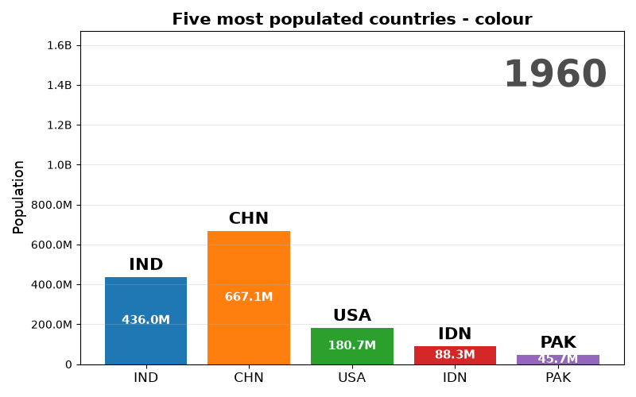
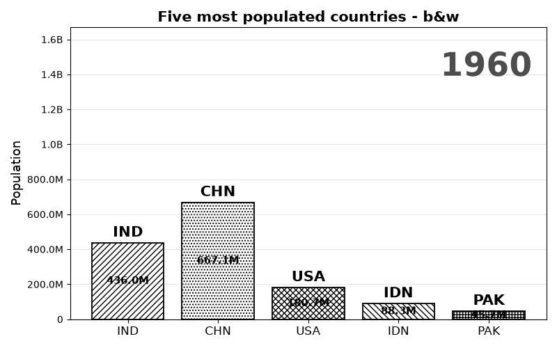
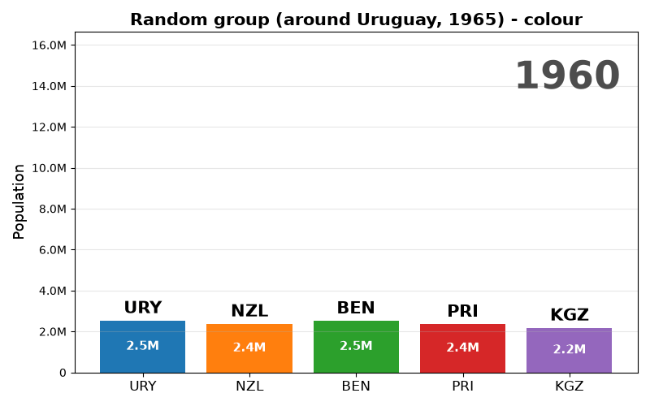
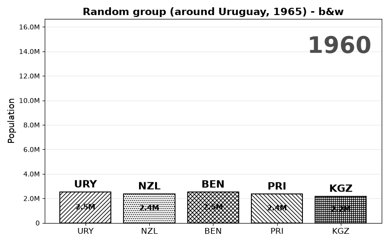
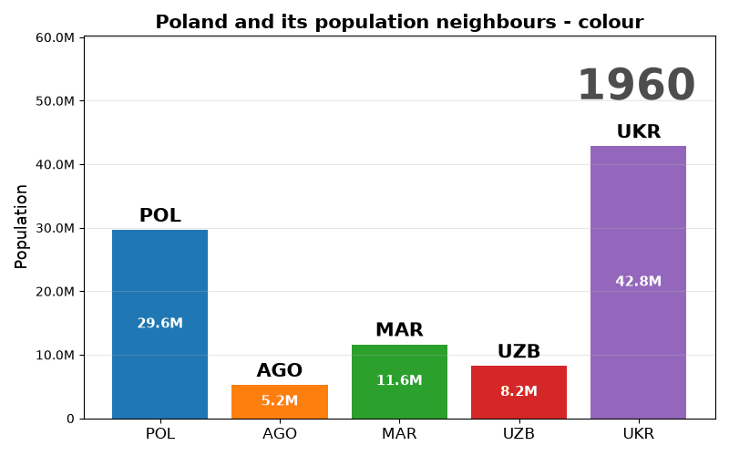
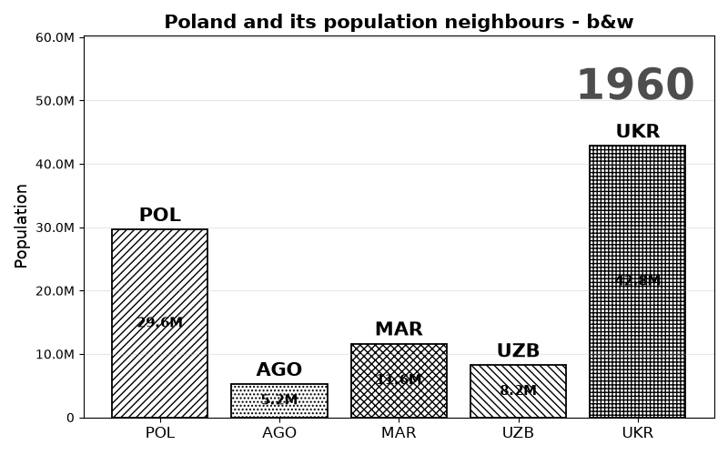
Each series starts as a dot and grows into a line; the country code rides the leading end.
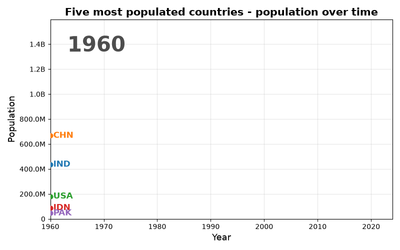
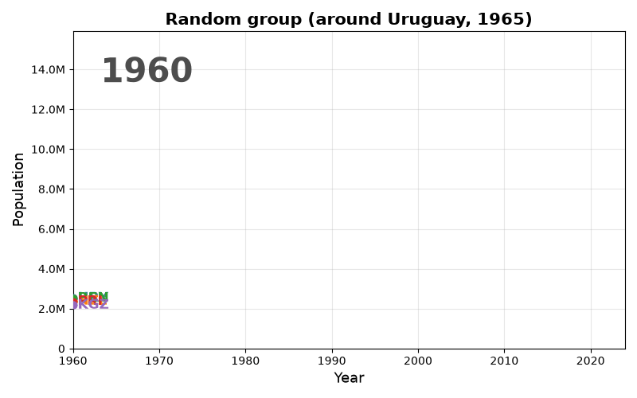
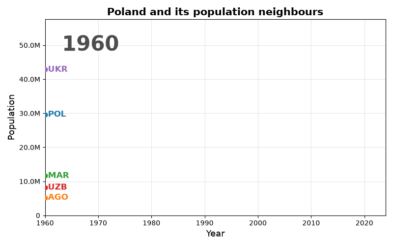
x = year, y = population, bubble size = population density (people/km²), with a faded trajectory trail.
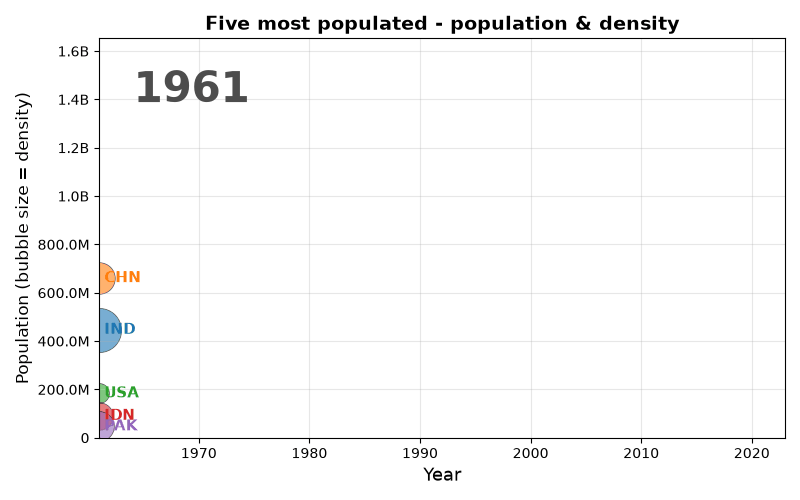
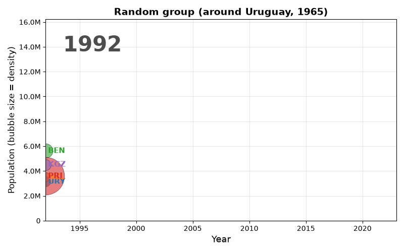
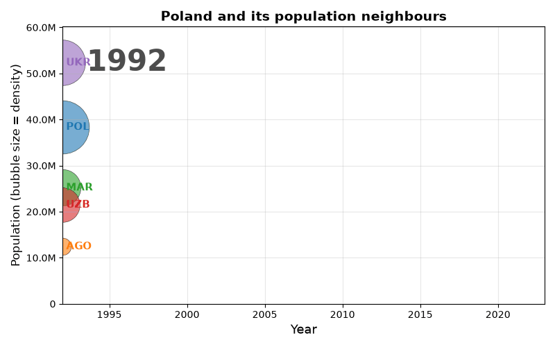
Horizontal bars re-sorted every year, so countries visibly overtake each other in rank (unlike the fixed vertical bars above).
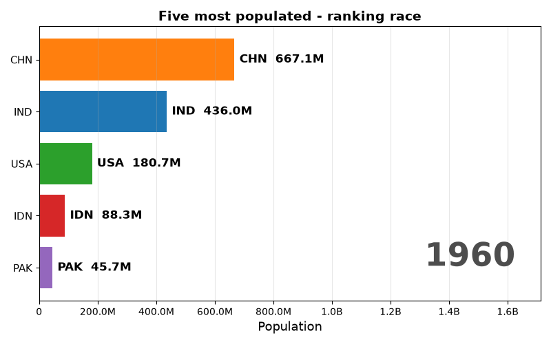
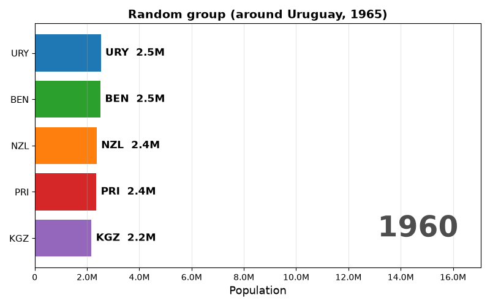
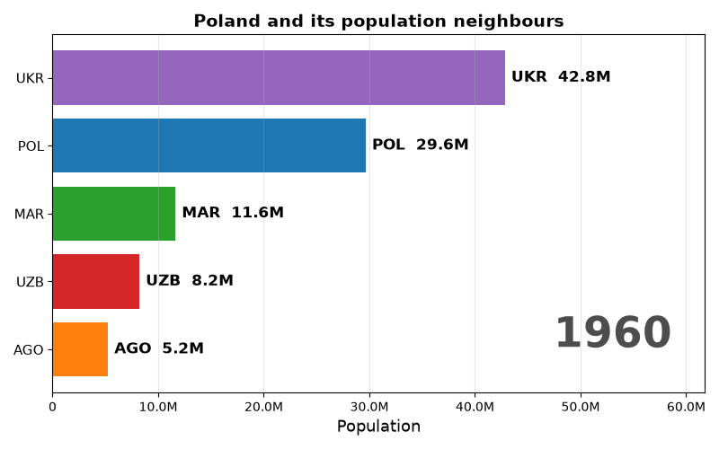
Rwanda and four neighbours. The animation freezes for ~4 seconds on 1994 with an explanatory label to emphasise the population collapse caused by the genocide (Rwanda fell from ~8.0M in 1993 to ~5.7M in 1995 before recovering).
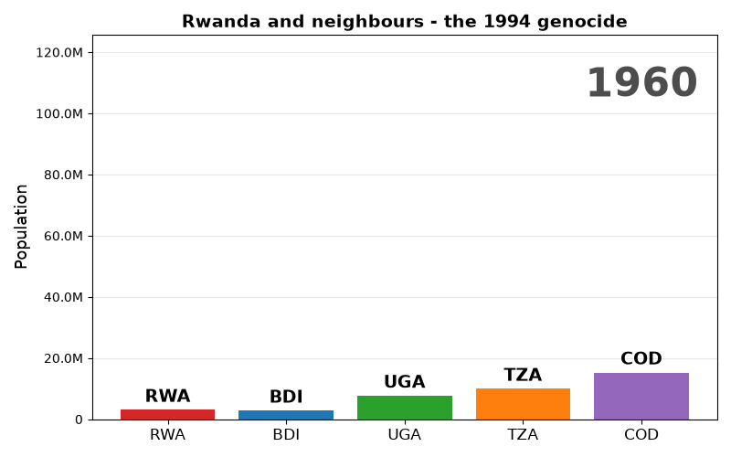
Organisation of the University of Warsaw 2026/2027 academic year for the Faculty of Mathematics, Computer Science and Mechanics, transcribed from the Rector's resolution M.2026.30.Post.1 (Appendix 1). Full-page A4 PDFs: colour / black-and-white.
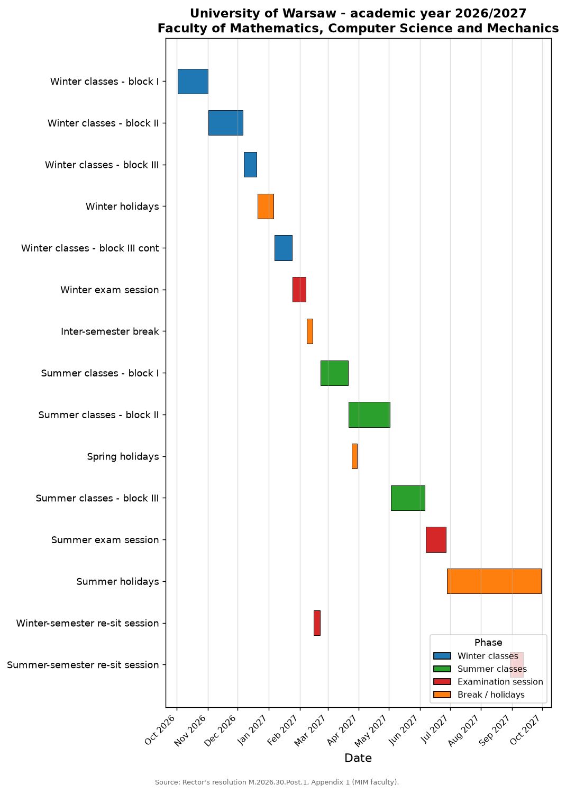
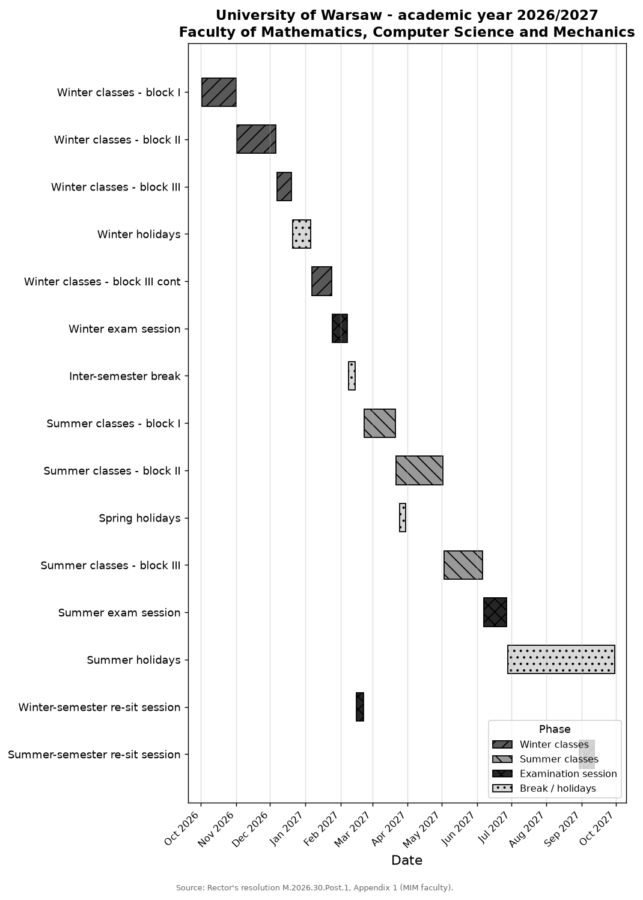